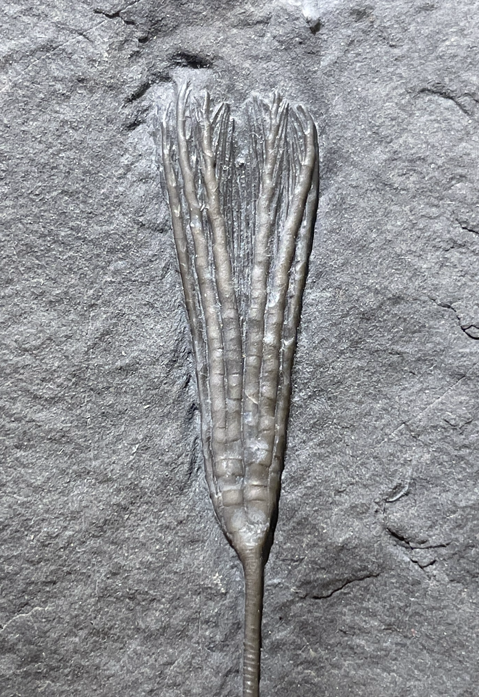

HOME
1. Ectenocrinus simplex
2. indet., Cladid
• Ordovician
• Neuville Formation
• near Quebec City, Quebec, Canada
Size: 3 cm crown, 16 cm including stem

Copyright © 2024 by Samuel Kim, all rights reserved